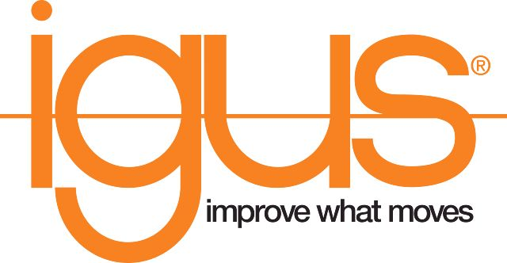

Stage Ingénieur : Robotique & Low-Cost Automation

Stage de 10 semaines réalisé chez igus France au sein du département Low-Cost Automation. Ma mission a porté sur la préparation de démonstrateurs technologiques et le développement d'interfaces de contrôle simplifiées.
🛠️ Mission 1 : Intégration matérielle & Interfaces de contrôle
Cette première partie de mon stage s'est concentrée sur la compréhension et la manipulation de l'architecture physique des systèmes robotiques.
⚙️ L'Armoire de Contrôle : Le cœur du système
Pour fonctionner, chaque robot est relié à une armoire de commande spécifique. J'ai travaillé sur la maintenance et le câblage de ces éléments critiques :
- - Alimentation : Gestion de la puissance électrique du système.
- - Modules Moteur & Encodeur : Pilotage précis des axes et retour d'information sur la position.
- - Automate (Contrôleur) : Unité de calcul centrale (basée sur une architecture Raspberry Pi industrielle) pilotant l'ensemble via le logiciel iRC.

⚡ Développement d'un boitier de contrôle
Conception d'un boîtier de commande physique pour simplifier l'utilisation du robot par les clients. J'ai géré le câblage et l'intégration des fonctions suivantes :
- Allumer / éteindre le robot.
- Activation / désactivation des moteurs.
- Lancement du programme de démonstration.
- Retour aux points zéros.

🤖 Mission 2 : Études de faisabilité client (CTA)
En support direct de mon maître de stage, j'ai géré le cycle complet des études de faisabilité pour valider l'intégration de nos robots dans les processus industriels des clients.
🎯 Démarche de projet
Analyse : Réception de l'idée ou du besoin client transmis par le tuteur.
Réalisation : Choix du robot, montage des différents outils (au besoin ventouse, pince, etc.) et programmation de la séquence voulue.
Validation : Envoi d'une vidéo de démonstration au client pour confirmer que la solution technique répond parfaitement à ses attentes.
🦾 Les systèmes robotiques programmés

Cobot 6 axes ReBeL

Robot Delta (Pick & Place)

Portique linéaire 3 axes
📊 Logigramme et flux de production

Conclusion
Ce stage chez igus France m'a permis d'approfondir mes connaissances en GEII en manipulant du matériel industriel de pointe. De l'armoire de commande à la programmation de trajectoires, j'ai maîtrisé l'ensemble de la chaîne de valeur de l'automatisation.